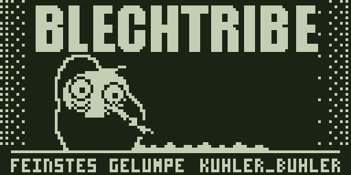

Ansetzen, kurz ziehen und wieder absetzen. Blechy bewegt sich an seinem festen Platz,
während Schrift und Tisch stehen bleiben. Die neue Werkbank-Schleife zeigt höchstens fünf Bilder pro Sekunde;
jedes Bild bleibt mindestens 200 ms stehen. Zwischenposen führen Kopf und Hand durch die Bewegung.
Der Fortschritt bleibt bewusst bei 42 %, damit du die Bewegung für sich beurteilen kannst.
128 × 641 BitWerkbank: maximal 5 FPSDesign-Demos
Design-Demos laufen in Schleife.
01
Neu: maximal 5 FPS
Werkbank

Bewegung bei festen 42 % GIF · Design-Demo
Ein kurzer Zug, danach eine Pause. Kopf und Arm führen die Bewegung aus; die linke Hand bleibt auf dem Tisch.
Hier prüfen: Ansetzen, Griff und Rhythmus.
Die 42 % und die Line bleiben in dieser Schleife unverändert. Der separate Fortschrittsvergleich zeigt 0 bis 100 %.
02
Frühere Layoutstudie
Typenschild
Start und Laden Standbild · 1 Bit
Frühere Aufteilung zum Vergleich: Figur und Schrift bekommen ihren eigenen Platz.
Der Schwerpunkt: Blechy ist gut erkennbar, die Marke bleibt daneben präsent.
03
Frühere Layoutstudie
Prägung
Start und Laden Standbild · 1 Bit
Frühere Aufteilung zum Vergleich: Blechy schaut über die Kante, darunter füllt sich BLECH als Ladeanzeige.
Der Schwerpunkt: Ruhige Haltepose und wachsende Pupillen. Die Striche als eigene Handlung entfallen.
Animation aus zeigt ein festes PNG. Bei Werkbank ist es die Zugpose bei 42 %.
Originalmaßstab bedeutet 128 × 64 CSS-Pixel; die physische Größe hängt von deinem Bildschirm ab.
Der gemeinsame Abschied
Haus’te rin mein Akh.
Blechy winkt, die Röhre geht aus. Der Abschied bleibt als eigener Ablauf erhalten und bekommt denselben dunklen Grund.